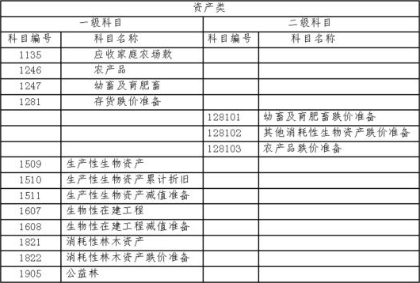
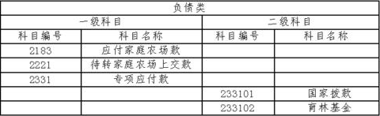
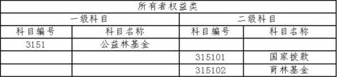
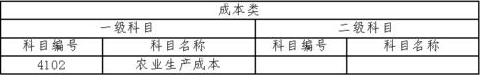
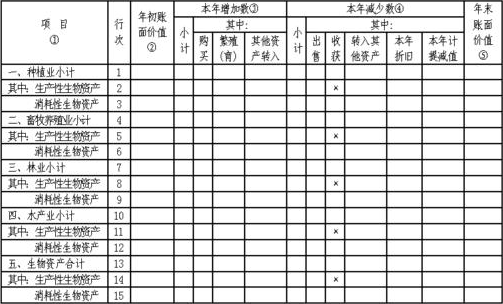
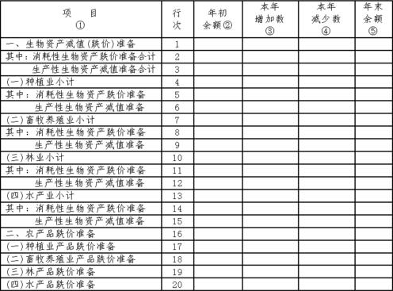

农业企业会计核算办法——生物资产和农产品
一、总说明
（一）为了统一规范农业企业生物资产和农产品的会计核算和相关信息的披露，根据《中华人民共和国会计法》、《企业财务会计报告条例》、《企业会计制度》和国家有关法律、法规，并结合农业企业生物资产和农产品的特点，特制定《农业企业会计核算办法——生物资产和农产品》（以下简称“本办法”）。
（二）中华人民共和国境内农业企业的生物资产和农产品的会计核算和相关信息的披露，执行本办法。
（三）本办法所称农业活动，指农业企业对将生物资产转化为农产品或其他生物资产的生物转化的管理。
生物转化，指导致生物资产质量或数量发生变化的生长、蜕化、生产、繁殖的过程。
（四）本办法所称生物资产，指农业活动所涉及的活的动物或植物。
生物资产应分为消耗性生物资产和生产性生物资产。消耗性生物资产是指将收获为农产品或为出售而持有的生物资产，如玉米和小麦等庄稼、用材林、存栏待售的牲畜、养殖的鱼等。生产性生物资产是指消耗性生物资产以外的生物资产，如产畜、役畜、经济林木等。生产性生物资产应进一步划分为成熟生产性生物资产和未成熟生产性生物资产。成熟生产性生物资产是指那些进入正常生产期，可以多年连续收获产品或连续提供劳务（服务）的生产性生物资产。
对于同时具有生产性和消耗性特点的生物资产，企业应根据生产经营的主要目的将其划分为生产性生物资产或消耗性生物资产进行核算和管理；对于暂时无法区分生产性和消耗性特点的生物资产，企业应作为消耗性生物资产进行核算和管理，待能够明确确定为生产性生物资产或消耗性生物资产时，再将生产性生物资产转出，单独进行核算和管理。
（五）企业应分别核算生产性生物资产和消耗性生物资产。
企业应增设“生产性生物资产”科目，核算成熟生产性生物资产的原价；增设“生物性在建工程”科目，核算未成熟生产性生物资产发生的实际支出。
企业应增设“消耗性林木资产”科目，核算已郁闭成林消耗性林木资产的实际成本。暂时难以明确生产性或消耗性特点的林木资产实际成本，也在本科目核算。
企业应增设“公益林”科目，核算已郁闭成林公益林的实际成本。
企业应增设“农业生产成本”科目，核算农业活动过程中发生的各项生产费用。
企业应增设“幼畜及育肥畜”科目，核算实行分群核算的幼畜（禽）或育肥畜（禽）的实际成本。实行分群核算的企业，其幼畜（禽）或育肥畜（禽）的饲养费用，在“农业生产成本”科目核算，不在本科目核算。
（六）本办法所称农产品，指生物资产的收获品，包括种植业产品、畜牧养殖业产品、水产品和林产品。
（七）生物资产在同时满足以下条件时，才能予以确认：
（1）因过去交易、事项的结果而由企业拥有或控制；
（2）该资产包含的经济利益很可能流入企业；
（3）该资产的成本能够可靠地计量。
（八）生物资产的初始计量应当按实际成本入账，实际成本的确定方法分别为：
1.外购的生物资产，按购买价格、运输费、保险费以及其他可直接归属于购买生物资产的相关税费，作为实际成本。
2.自行营造的具有生产性特点的林木，如橡胶树、果树、桑树、茶树和母树林等，按达到预定生产经营目的前营造林木发生的必要支出，作为实际成本。
自行营造的具有消耗性特点的林木，按郁闭成林前营造林木发生的必要支出，作为实际成本。
3.自繁的幼畜成龄转为产畜或役畜，按成龄时的账面价值，作为实际成本；产畜或役畜淘汰转为育肥畜，按淘汰时的账面价值，作为实际成本。
4.以其他方式获得的生物资产，如盘盈、接受捐赠、接受投资、非货币性交易、债务重组等，分别按《企业会计制度》、《企业会计准则——固定资产》、《企业会计准则——存货》有关存货和固定资产的规定，确定实际成本。
（九）从生物资产收获的农产品，按其生物转化过程中应当计入的各种耗费和已确定的成本计算方法计算确定的实际成本入账。
家庭农场、家庭林场、家庭牧场、家庭渔场等（以下简称家庭农场）上交的农产品验收入库时，按结算价格入账。
企业应增设“农产品”科目，核算企业从事农业活动所收获的农产品和家庭农场上交的农产品的实际成本，包括种植业产品、畜牧养殖业产品、水产品和林产品。
（十）成熟生产性生物资产达到预定生产经营目的后发生的管护费用，应在发生当期计入农业生产成本。
郁闭成林后的消耗性林木资产和公益林发生的管护费用，应在发生当期计入营业费用。
（十一）企业应至少于每年年度终了对生产性生物资产进行检查，如果由于遭受自然灾害、病虫害、动物疫病侵袭等原因，导致其可收回金额低于账面价值的，应按其可收回金额低于账面价值的差额，计提生产性生物资产减值准备。
生产性生物资产减值准备一经计提，不得转回。
通常情况下，在未遭受自然灾害、病虫害、动物疫病侵袭时，生产性生物资产不计提减值准备，按账面价值计量。
企业应增设“成熟生产性生物资产减值准备”科目，核算企业提取的成熟生产性生物资产减值准备；增设“生物性在建工程减值准备”科目，核算企业提取的未成熟生产性生物资产减值准备。
（十二）企业应至少于每年年度终了对消耗性生物资产进行检查，如果由于遭受自然灾害、病虫害、动物疫病侵袭等原因，使消耗性生物资产的成本高于可变现净值的，应按可变现净值低于成本的部分，计提存货跌价准备或消耗性林木资产跌价准备。
企业所拥有的公益林不计提跌价准备。
消耗性生物资产计提的存货跌价准备或消耗性林木资产跌价准备一经计提，不得转回。
通常情况下，在未遭受自然灾害、病虫害、动物疫病侵袭时，消耗性生物资产不计提存货跌价准备或消耗性林木资产跌价准备，按成本计量。
企业应设置“消耗性林木资产跌价准备”科目，核算企业提取的消耗性林木资产跌价准备；在“存货跌价准备”科目下设置“幼畜及育肥畜跌价准备”二级科目，核算实行分群核算的企业提取的幼畜或育肥畜跌价准备；在“存货跌价准备”科目下设置“其他消耗性生物资产跌价准备”二级科目，核算企业提取的其他消耗性生物资产跌价准备。
（十三）企业应至少于每年年度终了对农产品进行检查，如果由于农产品毁损、陈旧过时或销售价格低于成本等原因，使农产品成本高于可变现净值的，应按可变现净值低于成本的部分，计提农产品跌价准备。
企业应在“存货跌价准备”科目下设置“农产品跌价准备”二级科目，核算企业提取的农产品跌价准备。
二、补充会计科目和说明
（一）会计科目的设置
本办法在《企业会计制度》基础上，增设了以下一级科目和二级科目，并分别对其科目设置和核算内容进行了补充规定。
其他二级科目的设置，除本办法已有规定者外，在不违反统一会计核算要求的前提下，企业可以根据需要自行设置。




（二）补充会计科目的使用说明
1135 应收家庭农场款
一、本科目核算企业应收、暂付家庭农场的各种款项，如企业应向家庭农场收取的劳动保险费、福利费、管理费、利润、代购农用生产资料款等。
二、应收家庭农场款的主要账务处理如下：
（一）企业与家庭农场签订的承包合同生效时，按当年应收款项金额，借记本科目，贷记“待转家庭农场上交款”科目。
（二）为家庭农场垫付资金时，按垫付资金数额，借记本科目，贷记“现金”、“银行存款”等科目。
（三）将成熟生产性生物资产作价转让给家庭农场，价款未收回时，按应收价款金额，借记本科目，贷记“固定资产清理”科目。
（四）将未成熟生产性生物资产作价转让给家庭农场，价款未收回时，按应收价款金额，借记本科目，贷记“其他业务收入”科目。按未成熟生产性生物资产账面价值，借记“其他业务支出”科目，按未成熟生产性生物资产已计提的减值准备，借记“生物性在建工程减值准备”科目；按未成熟生产性生物资产账面余额，贷记“生物性在建工程”科目。
（五）将消耗性生物资产作价转让给家庭农场，价款未收回时，按应收价款金额，借记本科目，贷记“其他业务收入”科目。按消耗性生物资产账面价值，借记“其他业务支出”科目，按已计提的消耗性生物资产跌价准备，借记“存货跌价准备（幼畜及育肥畜跌价准备、其他消耗性生物资产跌价准备）”、“消耗性林木资产跌价准备”等科目；按消耗性生物资产账面余额，贷记“幼畜及育肥畜”、“农业生产成本”、“消耗性林木资产”等科目。
（六）收到家庭农场上交的款项或以农产品抵顶上交款时，按收到款项金额或农产品结算价格，借记“现金”、“银行存款”、“农产品”等科目，贷记本科目。
三、企业应按家庭农场名称设置明细账，进行明细分类核算。
四、本科目期末借方余额，反映尚未收回的家庭农场欠款。
1246 农产品
一、本科目核算企业从事农业活动所收获的农产品和家庭农场上交的农产品的实际成本，包括种植业产品、畜牧养殖业产品、水产品和林产品。
二、企业应根据各类农产品的实际情况，确定发出农产品的实际成本，可以采用的方法有个别计价法、先进先出法、加权平均法、移动平均法和后进先出法等。
发出农产品的成本确定方法一经确定，不得随意变更。如需变更，应在会计报表附注中予以说明。
三、企业的各种农产品，应当定期清查盘点，每年至少清查盘点一次。盘点结果如果与账面记录不符，应于期末前查明原因，并根据企业的管理权限，经股东大会或董事会，或经理（场长）会议或类似机构批准后，在期末结账前处理完毕。
盘盈或盘亏的农产品，如在期末结账前尚未经批准的，应在对外提供财务会计报告时先按上述规定进行处理，并在会计报表附注中作出说明；如果其后批准处理的金额与已处理的金额不一致，应按其差额调整会计报表相关项目的年初数。
四、农产品的主要账务处理如下：
（一）收获的农产品验收入库时，按其实际成本，借记本科目，贷记“农业生产成本”科目。
（二）家庭农场上交的农产品验收入库时，按结算价格，借记本科目，贷记“应收家庭农场款”等科目。
（三）将农产品出售，结转成本时，按选定的发出农产品计价方法计算确定的实际成本，借记“主营业务成本”科目，贷记本科目。
（四）清查盘点中发现的农产品盘盈，借记本科目，贷记“待处理财产损溢”科目。经批准的农产品盘盈，冲减当期管理费用，借记“待处理财产损溢”科目，贷记“管理费用”科目。
清查盘点中发现的农产品盘亏和毁损，借记“待处理财产损溢”科目，贷记本科目。经批准的农产品盘亏和毁损，在减去过失人或者保险公司等赔款和残余价值之后，计入当期管理费用，借记“管理费用”科目，贷记“待处理财产损溢”科目；属于自然灾害等非常损失的，计入当期营业外支出，借记“营业外支出——非常损失”科目，贷记“待处理财产损溢”科目。
五、企业应按农产品的类别、品种和保管地点设置明细账，进行明细分类核算。
六、本科目期末借方余额，反映企业库存农产品的实际成本。
1247 幼畜及育肥畜
一、本科目核算实行分群核算的幼畜（禽）或育肥畜（禽）的实际成本。
实行分群核算的企业，其幼畜（禽）或育肥畜（禽）的饲养费用，在“农业生产成本”科目核算，不在本科目核算；实行混群核算的企业，其幼畜（禽）或育肥畜（禽）的实际成本和饲养费用，在“农业生产成本”科目核算，不在本科目核算。
二、幼畜（禽）或育肥畜（禽）的主要账务处理如下：
（一）外购的幼畜（禽）或育肥畜（禽），按购买价格、运输费、保险费以及其他可直接归属于购买幼畜（禽）或育肥畜（禽）的相关税费，借记本科目，贷记“银行存款”、“应付账款”等科目。
（二）自繁幼畜（禽），按实际成本，借记本科目，贷记“农业生产成本”科目。
（三）结转幼畜（禽）或育肥畜（禽）的饲养费用，按结转金额，借记本科目，贷记“农业生产成本”科目。
（四）幼畜（禽）或育肥畜（禽）转群，借记本科目（XX群别），贷记本科目（XX群别）。
（五）产畜或役畜淘汰转为育肥畜时，按淘汰时的账面价值，借记本科目，按已计提的累计折旧，借记“生物资产累计折旧”科目，按已计提的减值准备，借记“成熟生产性生物资产减值准备”科目；按账面余额，贷记“生产性生物资产”科目。
（六）幼畜成龄转为产畜或役畜时，按其账面价值，借记“生产性生物资产”科目，按已计提的幼畜及育肥畜跌价准备，借记“存货跌价准备——幼畜及育肥畜跌价准备”科目；按账面余额，贷记本科目。
（七）幼畜（禽）或育肥畜（禽）对外销售，结转幼畜（禽）或育肥畜（禽）的实际成本时，按结转的实际成本，借记“主营业务成本”科目，贷记本科目。
（八）幼畜（禽）或育肥畜（禽）因死亡造成的损失，按其账面价值，借记“待处理财产损溢”科目，按已计提的幼畜（禽）及育肥畜（禽）跌价准备，借记“存货跌价准备——幼畜及育肥畜跌价准备”科目；按账面余额，贷记本科目。
待查明原因后，根据企业的管理权限，经股东大会或董事会，或经理（场长）会议或类似机构批准后，在期末结账前处理完毕。幼畜（禽）或育肥畜（禽）因死亡造成的损失，在减去过失人或者保险公司等赔款和残余价值之后，计入当期管理费用，借记“管理费用”科目，贷记“待处理财产损溢”科目；属于自然灾害等非常损失的，计入营业外支出，借记“营业外支出——非常损失”科目，贷记“待处理财产损溢”科目。
幼畜（禽）或育肥畜（禽）因死亡造成的损失，如在期末结账前尚未经批准的，应在对外提供财务会计报告时先按上述规定进行处理，并在会计报表附注中作出说明；如果其后批准处理的金额与已处理的金额不一致，应按其差额调整会计报表相关项目的年初数。
三、企业应按幼畜（禽）或育肥畜（禽）的种类和群别设置明细账，进行明细分类核算。
四、本科目期末借方余额，反映企业存栏幼畜（禽）或育肥畜（禽）的实际成本。
1504 生产性生物资产
一、本科目核算企业成熟生产性生物资产原价。
种植业企业的农田防护林在达到预定生产经营目的前发生的实际成本，在“生物性在建工程”科目核算，不在本科目核算；达到预定生产经营目的时的实际成本，在本科目核算；达到预定生产经营目的后发生的管护费用，在“农业生产成本”科目核算，不在本科目核算。禽类的基本禽群发生的实际成本，在“农业生产成本”、“幼畜及育肥畜”等科目核算，不在本科目核算。
二、企业应当根据成熟生产性生物资产的定义，结合本企业的具体情况，按农业企业的行业类别，制定适合本企业的成熟生产性生物资产目录、分类方法、每类或每项成熟生产性生物资产的折旧年限、折旧方法，作为进行成熟生产性生物资产核算的依据。企业制定的成熟生产性生物资产目录、分类方法、每类或每项成熟生产性生物资产的预计使用年限、预计净残值、折旧方法等，应当编制成册，并按照管理权限，经股东大会或董事会，或经理（场长）会议或类似机构批准，按照法律、行政法规的规定报送有关各方备案，同时备置于企业所在地，以供投资者等有关各 方查阅。
企业已经确定并对外报送，或备置于企业所在地的有关成熟生产性生物资产目录、分类方法、预计净残值、预计使用年限、折旧方法等，一经确定不得随意变更，如需变更，仍然应按照上述程序，经批准后报送有关各方备案，并在会计报表附注中予以说明。
三、成熟生产性生物资产的主要账务处理如下：
（一）购入的成熟生产性生物资产，按购买价格、运输费、保险费以及其他可直接归属于购买成熟生产性生物资产的相关税费，借记本科目，贷记“银行存款”等科目。
（二）自行营造的具有生产性特点的林木资产达到预定生产经营目的时转入成熟生产性生物资产，按转入时的账面价值，借记本科目，按已计提的减值准备，借记“生物性在建工程减值准备”科目；按账面余额，贷记“生物性在建工程”科目。
自繁幼畜成龄转为产畜或役畜，按成龄时的账面价值，借记本科目，按已计提的幼畜及育肥畜跌价准备，借记“存货跌价准备（幼畜及育肥畜跌价准备、其他消耗性生物资产跌价准备）”科目；按账面余额，贷记“幼畜及育肥畜”、“农业生产成本”等科目。
（三）盘盈的成熟生产性生物资产，按同类成熟生产性生物资产的市场价格，借记本科目，贷记“待处理财产损溢”科目。
（四）以其他方式取得的成熟生产性生物资产，如接受投资、接受捐赠、非货币性交易、债务重组等，分别按照《企业会计制度》、《企业会计准则——固定资产》有关固定资产的规定进行会计核算。
（五）成熟生产性生物资产达到预定生产经营目的后发生的管护费用，借记“农业生产成本”等科目，贷记“银行存款”、“原材料”、“应付工资”等科目。
（六）将产畜或役畜转为育肥畜，按产畜或役畜的账面价值，借记“固定资产清理”科目，按已计提的累计折旧，借记“生物资产累计折旧”科目，按已计提的减值准备，借记“成熟生产性生物资产减值准备”科目；按账面余额，贷记本科目。同时，按“固定资产清理”科目余额，借记“幼畜及育肥畜”科目，贷记“固定资产清理”科目。
（七）将成熟生产性生物资产作价转让给家庭农场时，按成熟生产性生物资产账面价值，借记录“固定资产清理”科目，按已计提的累计折旧，借记“生物资产累计折旧”科目，按已计提的减值准备，借记“成熟生产性生物资产减值准备”科目；按账面余额，贷记“生产性生物资产”科目。
成熟生产性生物资产作价转让发生净收益的，借记“固定资产清理”科目；贷记“营业外收入——处置成熟生产性生物资产净收益”科目；作价转让发生净损失的，借记“营业外支出——处置成熟生产性生物资产净损失”科目，贷记“固定资产清理”科目。
（八）盘亏的成熟生产性生物资产，按其账面价值，借记“待处理财产损溢”科目；按已计提的累计折旧，借记“生物资产累计折旧”科目，按已计提的减值准备，借记“成熟生产性生物资产减值准备”科目，按账面原价，贷记本科目。
（九）因死亡、出售、毁损等原因减少的成熟生产性生物资产，按减少的成熟生产性生物资产账面价值，借记“固定资产清理”科目；按已计提的累计折旧，借记“生物资产累计折旧”科目，按已计提的减值准备，借记“成熟生产性生物资产减值准备”科目；按账面原价，贷记本科目。
（十）因投资、非货币性交易、债务重组、捐赠等原因转出的成熟生产性生物资产，按《企业会计制度》、《企业会计准则——固定资产》有关投资、非货币性交易、债务重组、捐赠等转出固定资产的规定进行会计核算。
四、企业应设置“生产性生物资产登记簿”，按成熟生产性生物资产类别、所属部门进行明细分类核算。
五、本科目期末借方余额，反映期末企业成熟生产性生物资产的账面原价。
1506 生物资产累计折旧
一、本科目核算企业成熟生产性生物资产的累计折旧。
二、企业应根据成熟生产性生物资产的性质和消耗方式，结合农业企业的行业类别和本企业的具体情况，合理确定成熟生产性生物资产的预计使用年限和预计净残值，并选择合理的成熟生产性生物资产的折旧方法，按照管理权限，经股东大会或董事会，或经理（场长）会议或类似机构批准，作为计提折旧的依据。同时，按照法律、行政法规的规定报送有关各方备案，同时备置于企业所在地，以供投资者等有关各方查阅。 企业已经确定并对外报送，或备置于企业所在地的有关成熟生产性生物资产预计使用年限和预计净残值、折旧方法等，一经确定不得随意变更，如需变更，仍然应按照上述程序，经批准后报送有关各方备案，并在会计报表附注中予以说明。
三、成熟生产性生物资产折旧方法可以采用年限平均法、工作量法、年数总和法、双倍余额递减法等。
四、企业一般应按月计提折旧，当月增加的成熟生产性生物资产，当月不提折旧，从下月起计提折旧；当月减少的成熟生产性生物资产，当月照提折旧，从下月起不提折旧。成熟生产性生物资产提足折旧后，不管能否继续使用，均不再提取折旧；提前报废的成熟生产性生物资产，也不再补提折旧。
五、企业按月计提的成熟生产性生物资产折旧，借记“农业生产成本”等科目，贷记本科目。
六、本科目只进行总分类核算，不进行明细分类核算。
七、本科目期末贷方余额，反映企业提取的成熟生产性生物资产折旧累计数。
1508 成熟生产性生物资产减值准备
一、本科目核算企业提取的成熟生产性生物资产减值准备。
未成熟生产性生物资产提取的减值准备，在“生物性在建工程减值准备”科目核算，不在本科目核算。
二、企业应至少于每年年度终了，对成熟生产性生物资产进行检查，如果由于遭受自然灾害、病虫害、动物疫病侵袭等原因导致其可收回金额低于账面价值的，应按可收回金额低于账面价值的差额，计提成熟生产性生物资产减值准备。
三、成熟生产性生物资产减值准备一经计提，不得转回。
四、企业计提成熟生产性生物资产减值准备时，借记“营业外支出——计提的成熟生产性生物资产减值准备”科目，贷记本科目。
五、本科目期末贷方余额，反映企业已提取的成熟生产性生物资产减值准备。
1607 生物性在建工程
一、本科目核算企业未成熟生产性生物资产发生的实际成本。企业成熟生产性生物资产原价，在“生产性生物资产”科目核算，不在本科目核算。
二、生物性在建工程的主要账务处理如下：
（一）自行营造的生物性在建工程，按发生的实际成本，借记本科目，贷记“现金”、“银行存款”、“原材料”、“应付工资”等科目。
（二）由于遭受自然灾害、病虫害、动物疫病侵袭等原因造成的生物性在建工程报废或毁损，减去残料价值和过失人或保险公司等赔款后的净损失，报经批准后计入继续营造的生物性在建工程成本，借记本科目（其他支出），贷记本科目；如为非正常原因造成的生物性在建工程报废或毁损，或生物性在建工程全部报废或毁损，应将其净损失直接计入当期营业外支出，借记“营业外支出——非常损失”，贷记本科目。
（三）生物性在建工程达到预定生产经营目的时，按生物性在建工程账面价值，借记“生产性生物资产”科目，按已计提的生物性在建工程减值准备，借记“生物性在建工程减值准备”科目；按其账面余额，贷记本科目。
三、企业应按生物性在建工程项目设置明细账，进行明细分类核算。
四、本科目期末借方余额，反映企业尚未达到预定生产经营目的的生物性在建工程实际成本。
1608 生物性在建工程减值准备
一、本科目核算企业提取的未成熟生产性生物资产减值准备。企业提取的成熟生产性生物资产减值准备，在“成熟生产性生物资产减值准备”科目核算，不在本科目核算。
二、企业应至少于每年年度终了，对生物性在建工程进行全面检查。如果由于遭受自然灾害、病虫害、动物疫病侵袭等原因造成生物性在建工程的可收回金额低于其账面价值的，应按可收回金额低于账面价值的差额，计提生物性在建工程减值准备。
三、生物性在建工程减值准备一经计提，不得转回。
四、企业计提生物性在建工程减值准备时，借记“营业外支出——计提的生物性在建工程减值准备”科目，贷记本科目。
五、本科目期末贷方余额，反映企业已提取的生物性在建工程减值准备。
1821 消耗性林木资产
一、本科目核算已郁闭成林消耗性林木资产的实际成本。暂时难以明确生产性或消耗性特点的林木资产实际成本，也在本科目核算。
消耗性林木资产在郁闭成林前发生的实际支出，记“农业生产成本”科目核算，不在本科目核算；郁闭成林时的实际成本，在本科目核算；郁闭成林后发生的管护费用，在“营业费用”科目核算，不在本科目核算。
二、消耗性林木资产的主要账务处理如下：
（一）消耗性林木资产郁闭成林时，按其账面余额，借记本科目，贷记“农业生产成本”科目。
（二）郁闭成林后的消耗性林木资产发生的管护费用，借记“营业费用”科目，贷记“银行存款”、“现金”、“原材料”等科目。
（三）郁闭成林后的消耗性林木资产明确其生产性特点，转为成熟生产性生物资产时，按其账面价值，借记“生产性生物资产”科目，按已计提的消耗性林木资产跌价准备，借记“消耗性林木资产跌价准备”科目；按其账面余额，贷记本科目。
（四）将郁闭成林后的公益林转为消耗性林木资产时，按公益林的账面余额，借记本科目，贷记“公益林”科目。同时，借记“公益林基金”科目，贷记“资本公积”科目。
（五）消耗性林木资产采伐时，按其账面价值，借记“农业生产成本”科目，按已计提的消耗性林木资产跌价准备，借记“消耗性林木资产跌价准备”科目，按其账面余额，贷记本科目。
（六）期末，企业根据实际情况计算出消耗性林木资产的可变现净值低于其成本的，按可变现净值低于成本的差额，借记“营业外支出——计提的消耗性林木资产跌价准备”科目，贷记“消耗性林木资产跌价准备”科目。
三、企业应根据管理需要，按照林种、小班、造林抚育成本、营林期间费用等设置明细账，进行明细分类核算。
四、本科目期末借方余额，反映已郁闭成林消耗性林木资产的实际成本和暂时难以明确生产性或消耗性特点的林木资产的实际成本。
1822 消耗性林木资产跌价准备
一、本科目核算企业提取的已郁闭成林消耗性林木资产跌价准备。
二、消耗性林木资产在郁闭成林前不计提跌价准备。郁闭成林后的消耗性林木资产，企业应至少于每年年度终了对其进行检查，如果由于遭受自然灾害、病虫害、动物疫病侵袭等原因，导致其可变现净值低于成本的，应按其可变现净值低于成本的差额，计提消耗性林木资产跌价准备。
三、消耗性林木资产跌价准备一经计提，不得转回。
四、企业计提消耗性林木资产跌价准备时，借记“营业外支出——计提的消耗性林木资产跌价准备”科目，贷记本科目。
五、本科目期末贷方余额，反映企业已提取的消耗性林木资产跌价准备。
1905 公益林
一、本科目核算已郁闭成林公益林的实际成本。
公益林在郁闭成林前发生的实际支出，记“农业生产成本”科目核算，不在本科目核算；郁闭成林时的实际成本，在本科目核算；郁闭成林后发生的管护费用，在“营业费用”科目核算，不在本科目核算。
二、企业所拥有的公益林不计提跌价准备。
三、公益林的主要账务处理如下：
（一）公益林郁闭成林时，按其账面余额，借记本科目，贷记“农业生产成本”科目。同时，借记“专项应付款”、“资本公积”等科目，贷记“公益林基金”科目。
（二）郁闭成林后的公益林发生管护费用时，借记“营业费用”科目，贷记“银行存款”、“现金”、“原材料”等科目。期末，借记“专项应付款"科目，贷记“营业费用”科目。
（三）郁闭成林后的公益林转为成熟生产性生物资产时，按其账面余额，借记“生产性生物资产”科目，贷记本科目。同时，借记“公益林基金”科目，贷记“资本公积”科目。
（四）郁闭成林后的公益林转为消耗性林木资产时，按公益林的账面余额，借记“消耗性林木资产”科目，贷记本科目。同时，借记“公益林基金”科目，贷记“资本公积”科目。
（五）因毁损等原因减少公益林时，经主管部门批准，借记“公益林基金”科目，贷记“公益林”科目。
四、企业应根据管理需要，按照林种、小班、造林抚育成本、管护期间费用等设置明细账，进行明细分类核算。
五、本科目期末借方余额，反映已郁闭成林公益林的实际成本。
2183 应付家庭农场款
一、本科目核算企业应付、暂收家庭农场的各种款项，如企业收购家庭农场产品尚未结算的款项、代存家庭农场的其他收入等。
二、应付家庭农场款的主要账务处理如下：
（一）按合同规定收购家庭农场的产品尚未支付价款时，按结算价格，借记“农产品”科目，贷记本科目。
（二）代存家庭农场的各种其他收入，按代存金额，借记“银行存款”等科目，贷记本科目。
（三）支付时，借记本科目，贷记“现金”、“银行存款”等科目。
三、企业应按家庭农场名称设置明细账，进行明细分类核算。
四、本科目期末贷方余额，反映尚未偿付的家庭农场欠款。
2221 待转家庭农场上交款
一、本科目核算企业待结转的应收家庭农场款，如家庭农场应上交的劳动保险费、福利费、管理费、利润等。
二、待转家庭农场上交款的主要账务处理如下：
（一）企业与家庭农场签订的承包合同生效后，按当年应收款项金额，借记“应收家庭农场款”科目，贷记本科目。
（二）结算时，按先费后利原则，先结算劳动保险费、福利费、管理费等费用，后结算利润。按实际上交的应收款项金额，借记本科目，贷记“其他应付款”、“应付福利费”、“管理费用”、“本年利润”等科目。
三、企业应按待转家庭农场上交款的性质设置明细账，进行明细分类核算。
四、本科目期末贷方余额，反映企业尚未结转的应收家庭农场款金额。
3151 公益林基金
一、本科目核算企业营造和按规定划转郁闭成林后的公益林所形成的基金。
二、公益林基金的主要账务处理如下：
（一）公益林郁闭成林时，按其账面余额，借记“公益林”科目，贷记“农业生产成本”科目。同时，借记“专项应付款"、“资本公积”等科目，贷记本科目。
（二）郁闭成林后的公益林发生管护费用时，借记“营业费用”科目，贷记“银行存款”、“现金”、“原材料”等科目。期末，借记“专项应付款”科目，贷记“营业费用”科目。
（三）郁闭成林后的公益林转为成熟生产性生物资产时，按其账面余额，借记“生产性生物资产”科目，贷记公益林"科目。同时，借记本科目，贷记“资本公积”科目。
（四）郁闭成林后的公益林转为消耗性林木资产时，按其账面余额，借记“消耗性林木资产”科目，贷记“公益林”科目。同时，借记本科目，贷记“资本公积”科目。
（五）因毁损等原因减少公益林时，经有关部门批准，借记本科目，贷记“公益林”科目。
三、本科目期末贷方余额，反映公益林形成的公益林基金账面余额。
4102 农业生产成本
一、本科目核算农业活动过程中发生的各项生产费用。
农业活动过程中发生的各项生产费用，应按种植业、畜牧养殖业、水产业和林业分别确定成本核算对象和成本项目，进行费用的归集和分配。
实行混群核算的幼畜（禽）或育肥畜（禽）的实际成本和饲养费用以及实行分群核算的幼畜（禽）或育肥畜（禽）的饲养费用、郁闭成林前消耗性林木资产和公益林的实际成本以及其他消耗性生物资产的实际成本等，在本科目核算。
经济林木、农田防护林在达到预定生产经营目的前发生的实际成本，在“生物性在建工程”科目核算，不在本科目核算；达到预定生产经营目的时的实际成本，在“生产性生物资产”科目核算，不在本科目核算；达到预定生产经营目的后发生的采割、管护费用，在本科目核算。
二、农业生产成本的主要账务处理如下：
（一）郁闭成林前消耗性林木资产、公益林以及其他农业活动耗用的直接材料、直接人工和其他直接费，直接计入农业生产成本，借记本科目，贷记“原材料”、“应付工资”、“应付福利费”、“现金”、“银行存款”等科目。
（二）具有生产性特点的林木资产达到预定生产经营目的后发生的管护费用，直接计入农业生产成本，借记本科目，贷记“原材料”、“应付工资”、“现金”、“银行存款”等科目。
（三）机械作业等所发生的共同性费用，借记本科目（机械作业费等），贷记“累计折旧”等科目。期末，分配计入有关受益对象时，借记本科目（XX产品），贷记本科目（机械作业费等）。
（四）辅助生产单位提供的劳务，按承担劳务费用金额，借记本科目，贷记“生产成本——辅助生产成本”科目。
（五）经济林木、农田防护林、剑麻、产畜等成熟生产性生物资产计提的折旧，借记本科目，贷记“生物资产累计折旧”科目。零星橡胶树、果树、桑树、茶树等经济林木的更新和补植支出，在达到预定生产经营目的前，计入生物性在建工程；在达到预定生产经营目的后，直接计入农业生产成本。
（六）多次收获的多年生消耗性生物资产（如苜蓿），其往年费用按比例摊入本期产品成本部分，借记本科目（XX产品），贷记本科目（XX年种植XX作物）。
（七）年终尚未完成脱粒作业的产品，预提脱粒等费用时，借记本科目，贷记“预提费用”科目。
（八）畜（禽）产品实行混群核算的，畜（禽）本身的价值及其饲养费用，均通过本科目核算。购进畜（禽）时，按实际支付或应支付的价款，借记本科目，贷记“银行存款”等科目。实行分群核算的，本科目只核算各群发生的饲养费用，畜（禽）本身的价值在“幼畜及育肥畜”科目核算。期末结转各群的饲养费用时，借记“幼畜及育肥畜”科目，贷记本科目。
（九）发生的间接费用，先在“制造费用”科目进行汇集，期末再按一定的分配标准或方法，分配计入有关产品成本，借记本科目，贷记“制造费用”科目。
（十）收获的农产品（包括自产留用的种子、饲料、口粮）验收入库时，按实际成本，借记“农产品”科目，贷记本科目；不通过入库直接销售的鲜活产品，按实际成本，借记“主营业务成本”科目，贷记本科目。
（十一）消耗性林木资产采伐时，按其账面价值，借记本科目，按已计提的消耗性林木资产跌价准备，借记“消耗性林木资产跌价准备”科目，按其账面余额，贷记“消耗性林木资产”科目。
（十二）实行混群核算的幼畜成龄转为产畜或役畜，按账面价值，借记“生产性生物资产”科目，按已计提的其他消耗性生物资产跌价准备，借记“存货跌价准备——其他消耗性生物资产跌价准备”科目；按账面余额，贷记本科目。
三、企业应按成本核算对象设置明细账，并按成本项目设置专栏，进行明细分类核算。
四、本科目期末借方余额，反映农业活动过程中发生的各项费用，包括实行混群核算的幼畜（禽）或育肥畜（禽）的实际成本和饲养费用以及实行分群核算的幼畜（禽）或育肥畜（禽）的饲养费用、郁闭成林前消耗性林木资产和公益林的实际成本以及其他消耗性生物资产的实际成本等。
三、补充报表格式及编制说明
（一）企业在编制资产负债表时，“应收家庭农场款”科目，如有借方余额，应在减去“待转家庭农场上交款”科目贷方余额后，计入资产负债表的“其他应收款”项目。
“农产品”科目借方余额减去“存货跌价准备——农产品跌价准备”项目贷方余额后的净额，计入资产负债表的“存货”项目：“幼畜及育肥畜”科目借方余额减去“存货跌价准备——幼畜及育肥畜跌价准备”科目贷方余额后的净额，计入资产负债表的“存货”项目：“农业生产成本”科目借方余额减去“存货跌价准备——其他消耗性生物资产跌价准备”科目贷方余额后的净额，计入资产负债表的“存货”项目。在“固定资产原价”项目下，增设“其中：生产性生物资产”项目，反映“生产性生物资产”科目的借方余额；在“累计折旧”项目下，增设“其中：生物资产累计折旧”项目，反映“生物资产累计折旧”科目的贷方余额；在“固定资产减值准备”项目下，增设“其中：成熟生产性生物资产减值准备”项目，反映“成熟生产性生物资产减值准备”科目的贷方余额。
在“在建工程”项目下，增设“其中：生物性在建工程”项目，反映“生物性在建工程”科目借方余额减去“生物性在建工程减值准备”科目贷方余额后的净额。
“消耗性林木资产”科目借方余额减去“消耗性林木资产跌价准备”科目贷方余额后的净额，在资产负债表中增设第54行“消耗性林木资产”项目反映。
在“其他长期资产”项目下，增设“其中：公益林”项目，反映“公益林”科目的借方余额。
“应付家庭农场款”科目贷方余额计入资产负债表的“其他应付款”项目。
在“资本公积”项目下，增设“其中：公益林基金”项目，反映“公益林基金”科目的贷方余额。
（二）在利润表中增设第12行“家庭农场实际上交利润”项目，反映家庭农场实际上交的利润净额。
（三）本办法对《企业会计制度》“资产负债表”补充了附表4“生物资产账面价值变动表”，并说明其编制方法；对“资产负债表”附表1“资产减值准备明细表”补充了附表1.1“生物资产及农产品减值准备和跌价准备明细表”，并说明其编制方法。
（四）本办法对《企业会计制度》会计报表附注的披露内容补充了以下规定：
1.对生物资产分类情况的说明。
2.消耗性生物资产、农产品计提存货跌价准备的方法、可变现净值的确定依据，以及发生跌价损失的原因。
3.生产性生物资产计提减值准备的方法、可收回金额的确定依据，以及发生减值损失的原因。
4.成熟生产性生物资产采用的折旧方法和折旧年限。
5.生物性在建工程计提减值准备的方法、可收回金额的确定依据以及发生减值损失的原因。
6.报告期内生物资产的重大处置活动。
7.期末作为抵押物的生物资产的账面价值及其有关情况。
8.公益林及公益林基金账面价值的增减变动和结存情况。
生物资产账面价值变动表（格式）
| 编制单位： | ＿＿＿＿年度 | 会企01表附表4
单位：元 |
|

|
生物资产和农产品减值准备和跌价准备明细表（格式）
| 编制单位： | ＿＿＿＿年度 | 会企01表附表1.1
单位：元 |
|

|
生物资产账面价值变动表编制说明
一、“生物资产账面价值变动表”是企业编制的“资产负债表”（会企01表）的附表4（以下简称“本表”）。本表反映企业报告期生物资产账面价值的增减变动和结存情况。
二、本表“项目”栏按农业企业行业类别排列，分为种植业小计、畜牧养殖业小计、林业小计、水产业小计。
三、本表“期初账面价值”栏，反映各项目本报告年度期初的账面价值。
“生产性生物资产”项目，应分别根据“生产性生物资产”、“生物性在建工程”、“生物资产累计折旧”、“成熟生产性生物资产减值准备”、“生物性在建工程减值准备”等科目的期初余额分析填列。
“消耗性生物资产”项目，应分别根据“消耗性林木资产”、“农业生产成本”、“幼畜及育肥畜”、“公益林”、“消耗性林木资产减值准备”、“存货跌价准备——幼畜及育肥畜跌价准备”、“存货跌价准备——其他消耗性生物资产跌价准备”等科目的期初余额分析填列。
四、本表“本年增加数”、“本年减少数”栏，分别反映各项目本报告年度的增减变动情况。
“消耗性生物资产”、“生产性生物资产”项目，应分别根据“生产性生物资产”、“生物性在建工程”、“生物资产累计折旧”、“成熟生产性生物资产减值准备”、“生物性在建工程减值准备”等科目的本年发生额分析填列。
“消耗性生物资产”项目，应分别根据“消耗性林木资产”、“农业生产成本”、“幼畜及育肥畜”、“公益林”、“消耗性林木资产减值准备”、“存货跌价准备——幼畜及育肥畜跌价准备”、“存货跌价准备——其他消耗性生物资产跌价准备”等科目的本年发生额分析填列。
五、本表“期末账面价值”栏，反映各项目本报告年度期末的账面价值。
“生产性生物资产”项目，应分别根据“生产性生物资产”、“生物性在建工程”、“生物资产累计折旧”、“成熟生产性生物资产减值准备”、“生物性在建工程减值准备”等科目的期末余额分析填列。
“消耗性生物资产”项目，应分别根据“消耗性林木资产”、“农业生产成本”、“幼畜及育肥畜”、“公益林”、“消耗性林木资产减值准备”、“存货跌价准备——幼畜及育肥畜跌价准备”、“存货跌价准备——其他消耗性生物资产跌价准备”等科目的期末余额分析填列。
六、本表有关项目对应关系如下：
2行+3行=1行
5行+6行=4行
8行+9行=7行
11行+12行=10行
1行+4行+7行+10行=13行
2行+5行+8行+11行=14行
3行+6行+9行+12行=15行
②栏+③栏-④栏=⑤栏
生物资产及农产品减值准备和跌价准备明细表编制说明
一、“生物资产及农产品减值准备和跌价准备明细表”是企业编制的资产负债表附表1“资产减值准备明细表”的附表1.1（以下简称“本表”）。本表反映企业报告期生物资产和农产品减值准备和跌价准备的增减变动情况。
二、本表“项目”栏分为“生物资产减值（跌价）准备”和“农产品跌价准备”两大类，每类又分别按农业企业行业类别分为种植业、畜牧养殖业、林业、水产业四类。
三、本表“年初余额”栏，反映各项目本报告年度期初余额。
“消耗性生物资产跌价准备”项目，应分别根据“消耗性林木资产跌价准备”、“存货跌价准备——幼畜及育肥畜跌价准备”、“存货跌价准备——其他消耗性生物资产跌价准备”等科目的期初余额填列。
“生产性生物资产减值准备”项目，应分别根据“成熟生产性生物资产减值准备”、“生物性在建工程减值准备”等科目的期初余额填列。
“农产品跌价准备”项目，应根据“存货跌价准备——农产品跌价准备”科目期初余额填列。
四、本表“本年增加数”、“本年减少数”栏，分别反映各项目本报告年度的增减变动情况。 “消耗性生物资产跌价准备”项目，应分别根据“消耗性林木资产跌价准备”、“存货跌价准备——幼畜及育肥畜跌价准备”、“存货跌价准备——其他消耗性生物资产跌价准备”等科目的本年发生额分析填列。
“生产性生物资产减值准备”项目，应分别根据“成熟生产性生物资产减值准备”、“生物性在建工程减值准备”等科目本年发生额分析填列。
“农产品跌价准备”项目，应根据“存货跌价准备——农产品跌价准备”科目本年发生额分析填列。
五、本表“年末余额”栏，反映各项目本报告年度期末余额。
“消耗性生物资产跌价准备”项目，应分别根据“消耗性林木资产跌价准备”、“存货跌价准备——幼畜及育肥畜跌价准备”、“存货跌价准备——其他消耗性生物资产跌价准备”等科目的期末余额填列。
“生产性生物资产减值准备”项目，应分别根据“成熟生产性生物资产减值准备”、“生物性在建工程减值准备”等科目期末余额填列。
“农产品跌价准备”项目，应根据“存货跌价准备——农产品跌价准备”科目期末余额填列。
六、本表有关项目对应关系如下：
2行+3行=1行=4行+7行+10行+13行
5行+8行+11行+14行=2行
6行+9行+12行+15行=3行
5行+6行=4行
8行+9行=7行
11行+12行=10行
14行+15行=13行
17行+18行+19行+20行=16行
②栏+③栏-④栏=⑤栏
附录：农业企业生产成本的核算
一、种植业生产成本的核算
（一）成本核算对象
企业应根据种植业生产特点和成本管理要求，按照“主要从细，次要从简”的原则确定种植业成本核算对象。主要产品确定为小麦、水稻、大豆、玉米、棉花、糖料、烟叶、草、剑麻纤维等。对主要产品，应单独核算其生产成本；对其他农产品可合并核算其生产成本。
（二）成本计算期
企业应与其生产周期相一致，在产品产出的月份计算成本。种植业产品生产成本计算的截止时间因农作物产品特点而异。粮豆的成本算至入库或在场上能够销售；棉花算至皮棉；纤维作物、香料作物、人参、啤酒花等算至纤维等初级产品；草成本算至干草；不入库的鲜活产品算至销售；入库的鲜活产品算至入库；年底尚未脱粒的作物，其产品成本算至预提脱粒费用。下年度实际发生的脱粒费用与预提费用的差额，由下年同一产品负担。
（三）成本项目
企业应根据具体情况设置成本项目。一般情况下可设置以下成本项目：
1.直接材料，指生产中耗用的自产或外购的种子、种苗、肥料、地膜、农药等。
2.直接人工，指直接从事种植业生产人员的工资、工资性津帖、奖金、福利费。
3.机械作业费，指生产过程中进行耕耙、播种、施肥、中耕除草、喷药、收割等机械作业所发生的费用支出。
4.其他直接费，指除直接材料、直接人工和机械作业费以外的其他直接费用。
5.制造费用，指应摊销、分配计入各产品的间接生产费用。
（四）成本计算参考公式
某种作物单位面积（公顷）成本=该种作物生产总成本/该种作物播种面积某种作物主产品单位产量（千克）成本=(该种作物生产总成本-副产品价值)/该种作物主产品产量某种蔬菜应分配的温床（温室）费用=[温床（温室）费用总额/实际使用的格日（平方米日）总数]×该种蔬菜占用的格日（平方米日）数草场单位面积（公顷）成本=种草生产总成本/种草总面积
干草单位产量（吨）成本=种草生产总成本/干草总产量
多次收获的多年生作物，未提供产品前累计发生的费用，按规定比例摊入投产后各期的产品成本。
二、畜牧养殖业生产成本的核算
（一）成本核算对象
畜牧养殖业的成本核算对象是畜（禽）群及其产品。主要畜（禽）产品有牛奶、羊毛、肉类、禽蛋、蚕茧等。畜（禽）饲养可实行分群饲养，也可实行混群饲养。实行分群饲养的主要畜（禽）群别划分如下：
1.养猪业：基本猪群（包括母猪、种公猪、检定母猪、2个月以内的未断奶仔猪）；2~4个月幼猪；4个月以上幼猪和育肥猪。
2.养牛业：基本牛群（包括母牛和公牛）；6个月以内的犊牛；6个月以上的幼牛。
3.养马业：基本马群（包括母马、种公马、未断奶的马驹）；当年生幼马；二年生幼马；三年生幼马。
4.养羊业：基本羊群（包括母羊、种公羊、未断奶的羔羊）；当年生幼羊；往年生幼羊；去势羊和非种用公羊。
5.养禽业：基本禽群（包括成龄禽）；幼禽和育肥禽；人工孵化群。
（二）成本项目
1.直接材料，指畜牧养殖业生产耗用的饲料、燃料、动力、畜禽医药费等。
2.直接人工，指直接从事畜牧养殖业生产人员的工资、工资性津贴、奖金、福利费。
3.其他直接费，指除直接材料、直接人工以外的其他直接费用。
4.制造费用，指应摊销、分配计入各群别的间接生产费用，如产役畜折旧等。
（三）成本计算参考公式
1.混群核算的成本计算参考公式
某类畜（禽）本期生产总成本（元）=期初存栏价值+本期饲养费用+本期购入畜（禽）价值+本期无偿调入畜（禽）价值-期末存栏价值-本期无偿调出畜（禽）价值
某类畜（禽）主产品单位成本（元）=(某类畜（禽）生产总成本-副产品价值)/该类畜（禽）主产品总产量
2.分群核算的成本计算参考公式
畜（禽）饲养日成本[元/头（只）/日]=该群本期饲养费用/该群饲养头（只）日数离乳幼畜活重单位成本（元/千克）=(该群累计饲养费用-副产品价值)/离乳幼畜活重幼畜或育肥畜增重单位成本（元/千克）=(该群本期饲养费用-副产品价值)/该群增重数
某畜群增重量（千克）=该群期末存栏活重+本期离群活重（不包括死畜重量，下同）-期初结转、期内购入和转入的活重
某群幼畜或育肥畜活重单位成本（元/千克）=(期初活重总成本+本期增重总成本+购入、转入总成本-死畜残值)/(期末存栏活重+期内离群活重)
主产品单位成本（元/千克）=（该畜群累计全部饲养费用-副产品价值）/该畜群主产品总产量
三、林业生产成本的核算
（一）成本核算对象
林木生产包括种子、苗木、木材生产等，其主要产品有种子、苗木、原木、原竹、水果、干果、干胶（或浓缩胶乳）、茶叶、竹笋等。林木按生产阶段一般可分为种苗、造林抚育、采割三个阶段，不同阶段的林木也应分别核算其成本。
1.种苗成本核算对象：种子应按树种分别归集费用，核算种子成本；育苗阶段应按树种、育苗方式、播种年份分别归集费用，核算育苗成本。
2.造林抚育成本核算对象：消耗性林木资产和公益林根据企业管理的需要，可按照小班、树种等归集费用，核算造林抚育成本。
3.木材生产成本核算对象：按木材采伐运输方式、品种、批别及其生产过程等，根据企业管理的需要归集费用，核算木材生产成本。
4.其他林产品成本核算对象：按照收获的品种、批别、生产过程等，根据企业管理的需要归集费用，核算收获品的成本。
（二）成本计算期
各阶段林木及林产品的生产成本计算：育苗阶段算至出圃时；造林抚育阶段，消耗性林木资产和公益林算至郁闭成林前；采割阶段，林木采伐算至原木产品，橡胶算至干胶或浓缩胶乳，茶算至各种毛茶，其他收获活动算至其他林产品入库。
（三）成本项目
林业企业的成本项目可按照种植业企业的生产成本项目设置，也可根据管理需要自行设置。
（四）成本计算参考公式
某树种苗木单位面积培育成本=该树种生产费用/该树种苗木面积（公顷）
某树种出圃苗木单株成本=该树种出圃苗木总成本/该树种苗木产量（株）
经济林木的培育成本=成熟前经济林木造林抚育成本+成熟前经济林木管护费用
消耗性林木资产的培育成本=郁闭成林前消耗性林木资产造林抚育成本+郁闭成林前消耗性林木资产管护费用
消耗性林木资产的木材生产成本=采伐的消耗性林木资产账面价值+木材采运成本
四、水产业生产成本的核算
（一）成本核算对象
水产业一般以水产品品种为成本核算对象。水产养殖的主要产品有鱼、虾、贝类、藻类、鱼种、鱼苗等。
（二）成本项目：
1.直接材料，指直接用于养殖生产的苗种、饲料、肥料和材料等。其中：苗种指直接用于养殖生产的鱼苗、鱼种、虾苗、蟹苗、贝苗、藻苗、水生植物的种子等，孵化用的亲鱼、亲虾也属于本项目；饲料指直接用于养殖生产的各种饲料；材料指直接用于养殖生产的各种渔需物资和渔具等低值易耗品摊销等。
2.直接人工，指直接从事水产养殖人员的工资、工资性津贴、奖金、福利费。
3.其他直接费，指除直接材料、直接人工以外的其他直接费用。
4.制造费用，指应摊销、分配计入各产品的间接生产费用。
（三）成本计算公式
每万尾鱼苗成本=育苗期的全部生产费用/育成鱼苗万尾数每万尾（千克）鱼种成本=育种期的全部生产费用/育成鱼种万尾（千克）数
多年放养成鱼单位（千克）成本=(捕捞前各年发生的生产费用+本年生产费用)/成鱼总产量
逐年放养成鱼单位（千克）成本=本年成鱼放养的全部费用/本年成鱼产量
海水养殖成鱼单位成本=（捕捞前各年结转的生产费用+当年发生的生产费用+捕捞费用）/海水养殖成鱼总产量
五、企业对家庭农场实行承包经营的，不再实行种植业、畜牧养殖业、林业、水产业的成本核算。